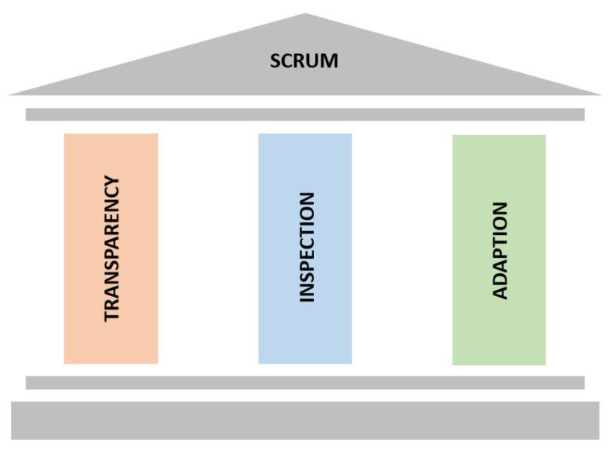

SCRUM


AGILE

Why is it needed at all?


Three pillars of scrum

1. Transparency.
Transparency means presenting the facts as is. All team involved in process. They all trust each other, and they have the courage to keep each other abreast of good news as well as bad news. Everyone strives and collectively collaborates.

2. Inspection.
Inspection by everyone on the Scrum Team. The inspection can be done for the product, processes, people aspects, practices, and continuous improvements. For example, the team openly and transparently shows the product at the end of each Sprint to the customer in order to gather valuable feedback.

3. Adaptation.
Adaptation is about continuous improvement, the ability to adapt based on the results of the inspection. If the customer changes the requirements during inspection, the team does not complain but rather adapts by using this as an opportunity to collaborate with the customer to clarify the requirements and test out the new hypothesis.
RULES OF SCRUM

SCRUM ARTIFACTS

Product Backlog


Sprint Backlog


Increment

SCRUM EVENTS

Sprint


Sprint Planning


Daily Scrum

Sprint Review

Sprint Retrospective


SCRUM TEAM

Product Owner

Main responsibilities of a product owner:
- Definition of the product vision
- Product backlog management
- Control at all stages of development
Scrum Master

Main responsibilities of a scrum master:
- Facilitate the Scrum process
- Remove impediments
- Facilitate communication
- Ensure transparency
Development Team

Main responsibilities of a development team:
- Getting work done through a sprint
- Ensuring transparency
- Self-organization
ADVANTAGES / DISADVANTAGES
-
+
- The team works in small stages, at each of which goals and ways to achieve them are determined, which increases the speed of work
- The team works on different project tasks at the same time and achieves the desired goal faster
- Large tasks are divided into small ones, so it is convenient to make adjustments in the process
- Due to quick response to changes and elimination of errors, financial risks are minimized
- Each team member knows what they are responsible for
- Open exchange of information makes the work as transparent as possible
- Daily visibility of achievement keeps motivation high
-
-
- Scrum is not suitable for projects that are too large and complex, as there may be problems with team coordination
- A high level of trust in the team is required
- After a long period of work, the dynamics of productivity drops, the team needs to be rebuilt or destroyed
- The customer must constantly communicate with the team and give feedback
Thank you for your attention!